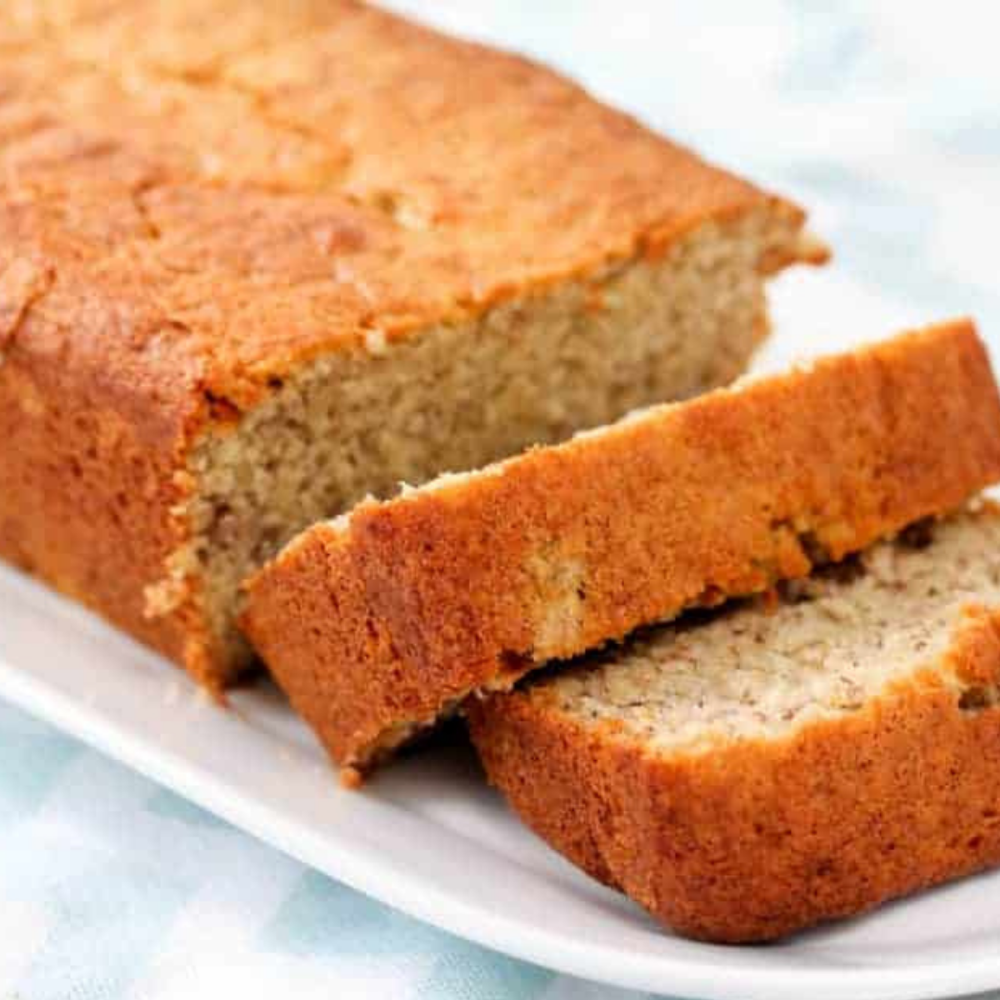

Banana Cake

About this cake
This crunchy on the outside, yet moist on the inside cake, is guaranteed to win over your friends or family members that follow a gluten free diet, either by choice or a due to a health condition.
It's quick and easy to make. Great for using up those over ripe bananas sitting in your counter.
Ingredients
- 200g rice flour
- 120g granulated sugar
- 75g unsalted butter
- 2 ripe medium sized bananas
- 2 eggs
- 6 tablespoons milk (you can substitute by water if lactose intolerant)
Steps
- Grease a pan with butter and flour it, removing excess flour. Optionaly you can line it with parchment paper
- Mash the bananas with a fork.
- Wisk together all the ingredients
- Bake in a pre-heated oven, 180 Celsius, until golden on top. Let it cool slightly and flip it onto a plate.